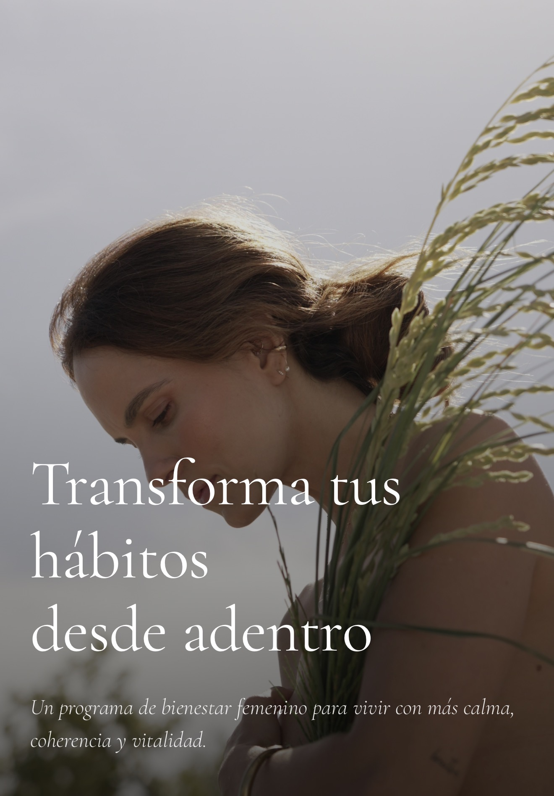
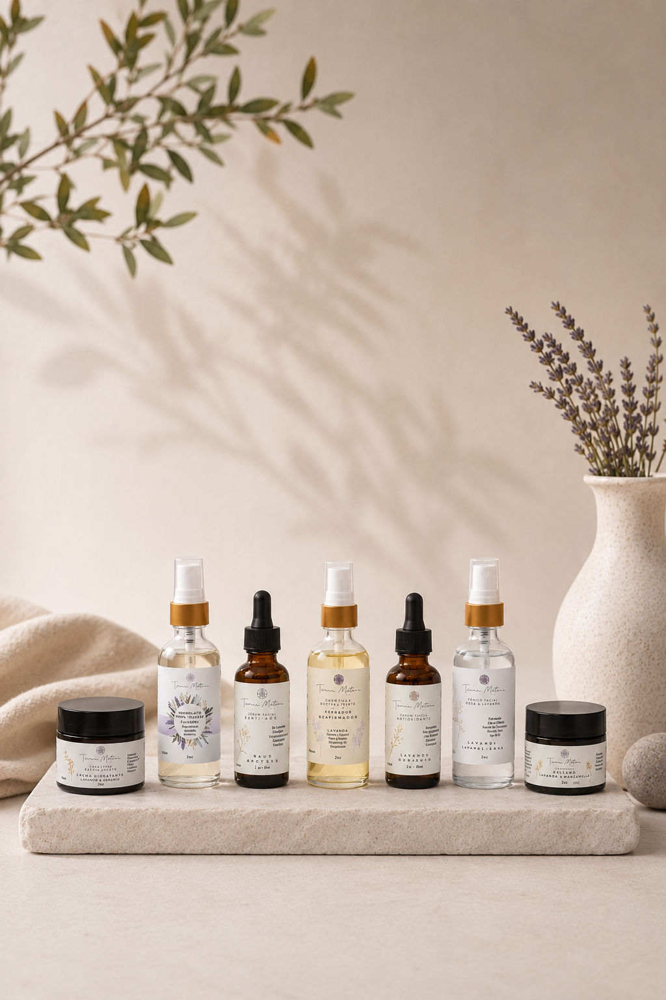
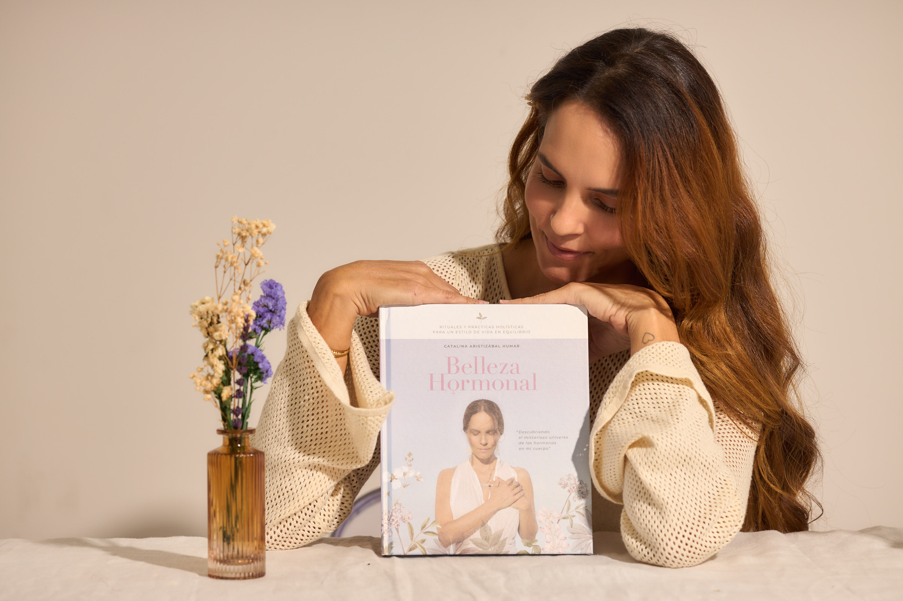
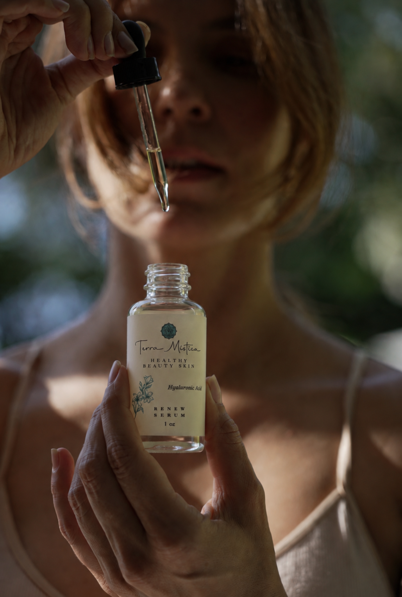
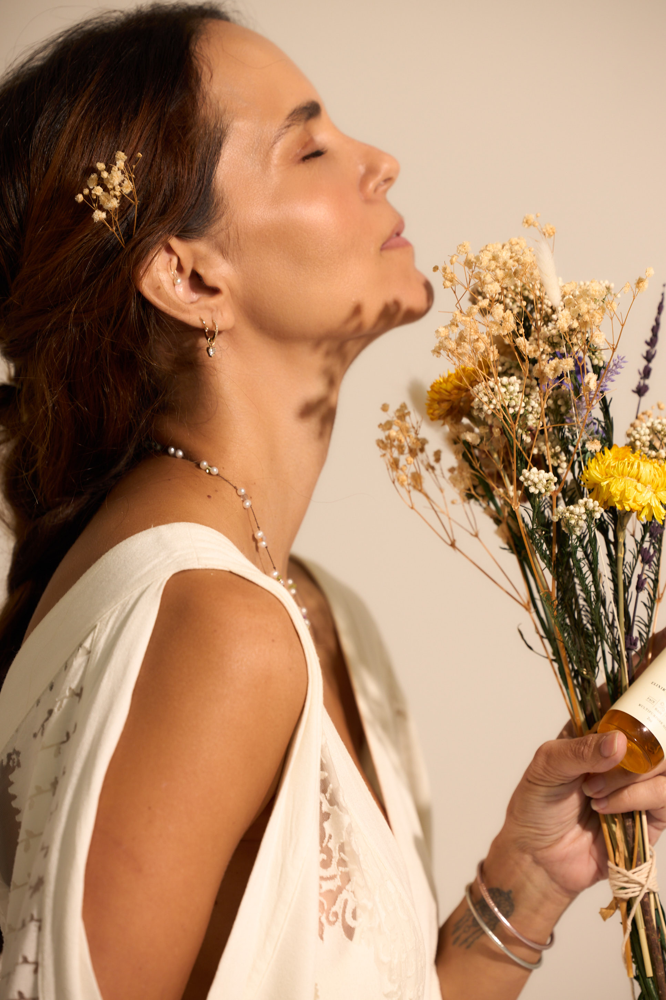
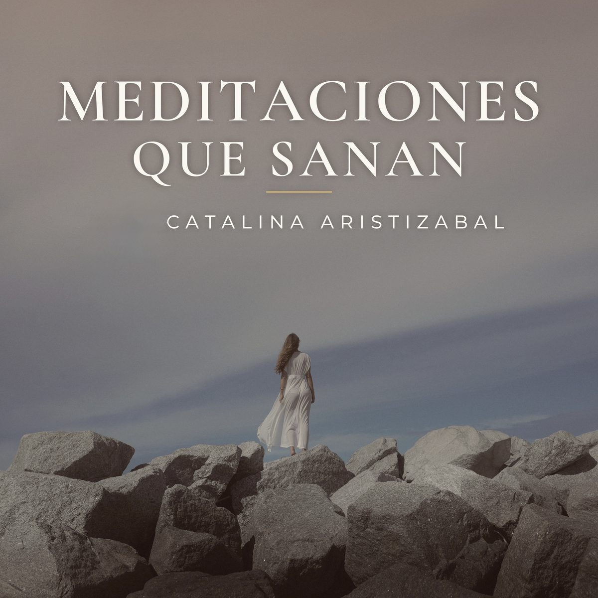

Programa 1:1 · 6 meses

Una mirada profunda
hacia el equilibrio, la salud y la belleza consciente
Salud, belleza y consciencia
en un mismo camino.
Llegué desde la experiencia. Durante años estudié el cuerpo femenino, las hormonas, la microbiota y los procesos internos que muchas veces no entendemos hasta que nos atraviesan. Mi propio diagnóstico de Hashimoto marcó un antes y un después. Me obligó a mirar hacia adentro, a cuestionar, a investigar y a construir un conocimiento con fundamento.
No creo en soluciones rápidas. Creo en comprensión profunda. Mi trabajo une ciencia, conciencia y experiencia real. He acompañado a mujeres que desean entender su cuerpo, recuperar su energía y vivir con mayor claridad. No desde la perfección, sino desde el equilibrio.
Soy fundadora de Terra Mística, autora y educadora en bienestar femenino. Pero más allá de los títulos, soy una mujer que decidió convertir el aprendizaje en servicio.
Mi enfoque no es imponer un camino. Es ofrecer claridad para que cada mujer pueda habitar su cuerpo con confianza. Porque la verdadera transformación ocurre cuando comprendemos quiénes somos y cómo funciona nuestro cuerpo.
Seis caminos hacia el bienestar, la consciencia y la belleza natural.

6 módulos para transformar tu relación con tu cuerpo desde adentro. Nutrición, movimiento, meditación y más.
Ver curso →
Co-fundadora de una línea de productos naturales para el bienestar y la belleza consciente.
Explorar tienda →
Mi libro sobre el equilibrio hormonal, la belleza desde adentro y cómo entender tu cuerpo femenino para vivir mejor.
Conseguir libro →Catalina Aristizabal —
Conversaciones que Sanan
con Catalina Aristizabal
Contenido sobre salud holística, estilo de vida consciente y bienestar. Suscríbete para ser el primero.
Suscríbete →
PróximamenteConversaciones sobre equilibrio, plenitud y salud integral femenina. Disponible en tus plataformas favoritas.
Meditaciones guiadas para volver a tu centro: para calmar la ansiedad, acompañar el duelo o simplemente regalarte un momento de paz. Cada lunes, una nueva pausa para respirar, sentir y volver a ti.
Hidratar la piel con tendencia al acné no la empeora: le da las condiciones para sanar. Te cuento por qué amo el ácido hialurónico.
Leer →Agua, duchas tibias, ingredientes limpios y tres alimentos aliados: lo esencial para una piel hidratada y sana.
Leer →
Estilo de vidaMás allá de la comida: un estilo de vida en equilibrio que se aprende en familia y acompaña a nuestros hijos toda la vida.
Leer →Dormir bien es parte fundamental de cualquier rutina de salud. Hábitos, horarios y rituales que me ayudan a descansar.
Leer →
Hormonas
Después de los 40 no es solo el calendario, es el cuerpo. Cómo el estrógeno, el cortisol y la tiroides se reflejan en tu piel.
Leer →Una receta simple con lo que la Tierra nos regala para calmar la piel, y un pequeño ritual para aplicarla con amor.
Leer →
Espiritualidad
La gratitud también se practica cuidando este cuerpo sagrado. Mi Ritual Elemental de Belleza en cinco pasos.
Leer →"La salud no es solo lo que comes.— Catalina Aristizabal
Es todo lo que piensas, sientes y cómo te mueves por la vida."
Este es un lugar para inspirarte a vivir mejor: desde la nutrición, el movimiento, la belleza consciente y esas reflexiones que nos recuerdan volver a nosotras.
Un podcast sobre equilibrio, plenitud y salud integral femenina. Cada episodio es una invitación a reconectar con tu naturaleza más profunda.
Catalina Aristizabal — Conversaciones que Sanan
con Catalina Aristizabal
Meditaciones guiadas para volver a tu centro: para calmar la ansiedad, acompañar el duelo o simplemente regalarte un momento de paz. Cada lunes, una nueva pausa para respirar, sentir y volver a ti.

¿Tienes preguntas o quieres saber más? Encuéntrame en mis redes o escríbeme directamente.
Escríbeme →